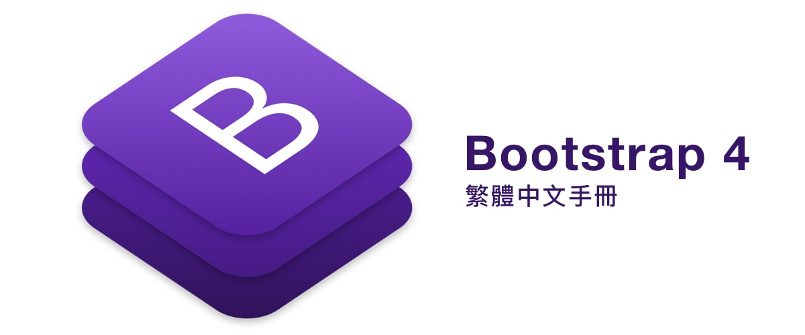

Bootstrap 是目前最主流的 CSS 框架，由於他包含了大量的元件以及具有良好的架構，在實際運用及擴增也都是非常容易，也越來越多開發者協同一起開發 (Github 上有超過 10 萬個Star)。如今第四版 Beta (Bootstrap 4 Beta) 也在 2017/8/10 釋出，我們先來看看他有什麼樣的改變吧！
Bootstrap 4 的特色
Bootstrap 4 Beta 經過了 Alpha 六個版本的歷練，重新翻修了大量元件以及加入許多新的元素，如果你沒有用過 Alpha 的任何版本，提供了以下摘要讓您快速了解第四版有什麼新新聞：
- 從 Less 到 Sass: 自從 Sass 不在只能使用 Ruby 編譯後，Libsass 有更快的編譯效率，加上 Sass 本身具有龐大的開發社群，所以 Bootstrap 從 Less 改用 Sass 囉！
- Flexbox 以及強化的網格系統: 網格系統不在使用
float，進而改用flexbox，讓行動裝置及桌面裝置有更彈性的排版方法。 - 卡片元件: 許多元件本質相似度較高，如
wells、thumbnails、panels等等，這些元件被捨棄掉，取而代之的則是卡片元件，不僅可以完成上述元件的功能，且運作的更為美好。 - 彈性更高的變數: 以往的樣式都是固定的名稱、色彩，透過 Sass
$map變數可以更有彈性的調整、新增、減少不同的品牌色彩、陰影等視覺效果。 - IE8、IE9 掰掰: 放棄舊有的瀏覽器支持，讓元件的使用及開發上更為容易，如果還是考慮支援 IE8/IE9、 Safari 8-、 iOS 8- 可以繼續使用 Bootstrap 3。
- 重新設計說明文件: 新的文件重新設計了，並且加入一些插件讓搜尋上更為容易！
- 更多的改變: 重新設計更多更多的樣式，像是自由套色的導覽列、HTML5 的驗證樣式、嶄新的輪播以及許多的元件
繁體中文手冊
加入了這麼多新功能，如果從頭開始了解原文版本也需要花上不少時間，於是六角學院從兩個月前開始著手翻譯，在正式釋出 Beta 版後的兩個工作日釋出繁體中文手冊，讓對於 Bootstrap 有需求的同學可以加速上手～
